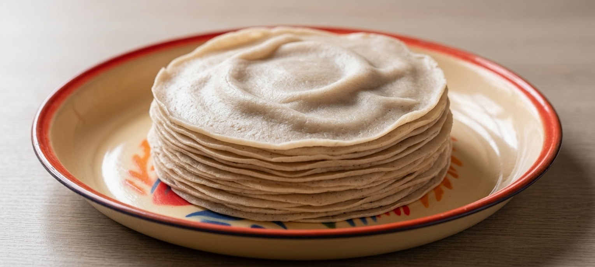
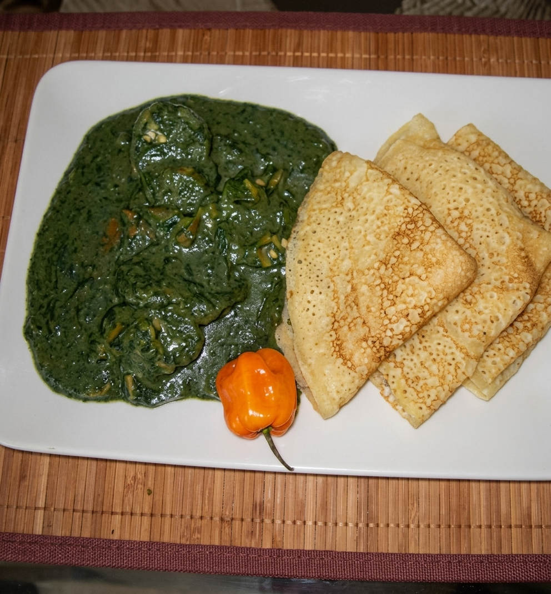
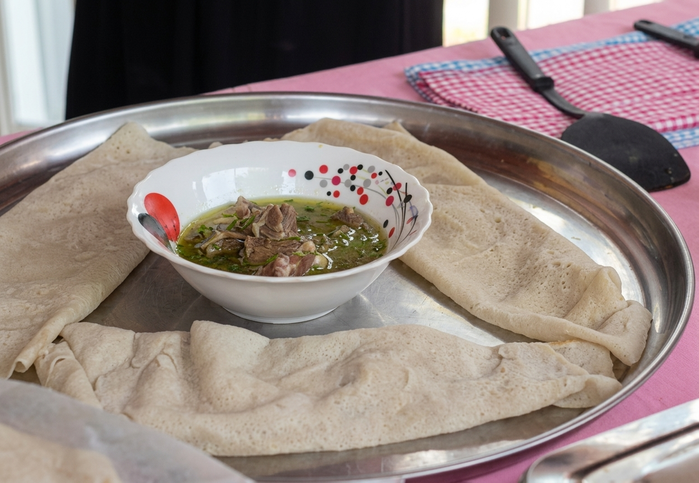
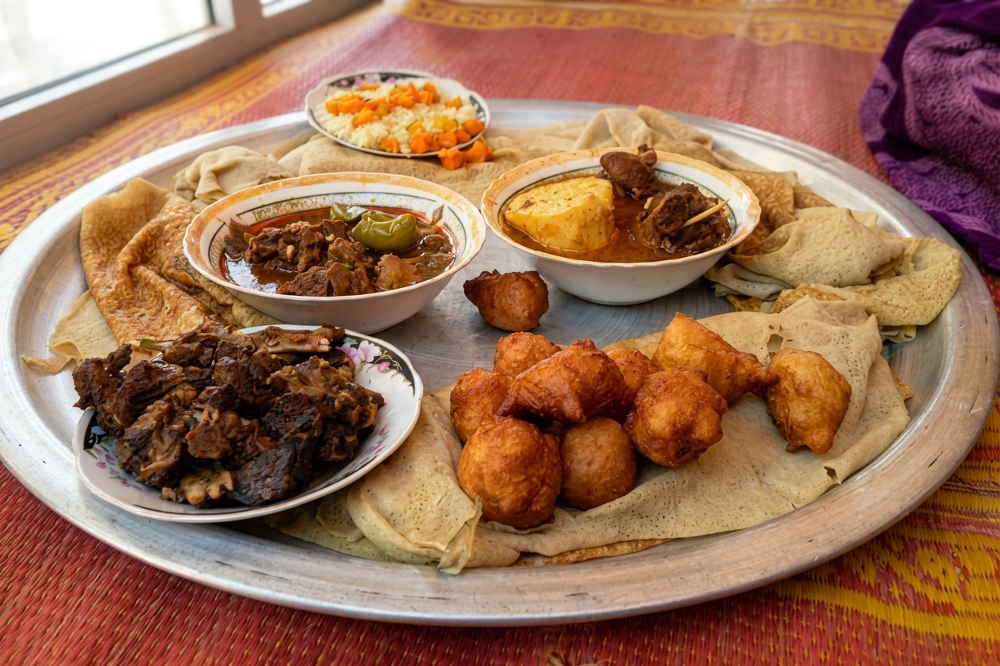

01
Préparé avec soin
Un Kissar préparé avec attention pour vous offrir une saveur qui donne envie d'en reprendre.
Une préparation authentique, savoureuse et généreuse, pensée pour partager de bons moments en famille.
Chez Kissar de Maman, nous avons choisi de mettre toute notre attention sur une seule chose : vous proposer un Kissar préparé avec soin et avec amour.

Un Kissar préparé avec attention pour vous offrir une saveur qui donne envie d'en reprendre.

Le plaisir d'un bon Kissar, simplement et généreusement.

Pour un repas en famille, entre amis ou simplement pour se faire plaisir.

Parce que les meilleurs moments sont souvent ceux que l'on partage autour d'un bon repas.
Chaque préparation est réalisée avec attention et passion.
Nous voulons préserver le plaisir d'un Kissar simple et authentique.
Petit plaisir personnel ou repas à partager, le Kissar trouve toujours sa place.
Vous souhaitez commander ou avoir plus d'informations ? Contactez-nous directement.